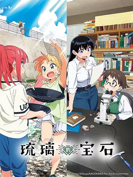

8.5
琉璃的宝石
Ruri’s Gemstones
2025
日本
评分 8.5
导演:
藤井慎吾
演员:
根本京里 / 濑户麻沙美 / 宫本侑芽 / 林咲纪 / 山田美铃
类型:
冒险,剧情
剧情简介
谷川琉璃从小就对“闪闪发光的东西”抱有无法掩饰的热情。一次放学后的即兴冒险，她背着简陋的工具包钻进山林，想亲手找到属于自己的水晶。山风带着湿气拂过树梢，她在岩层间仔细观察纹理，却意外遇到正在做野外调查的研究生荒砥凪——一位对矿物世界有着专业眼光与沉稳气质的少女。阿凪看出琉璃的认真与好奇，便邀请她一起踏入真正的矿物采集旅程。从山道到溪谷，两人的探索逐渐从简单的捡拾扩展到专业采样。琉璃第一次拿起锤凿敲开风化的岩块，也第一次在显微镜下凝视那些肉眼难辨的晶体结构。阿凪耐心解释每一种矿物形成的条件、产地与特征，而琉璃的热情与直觉又让原本严谨的科学过程多了几分活泼。她们肩并肩穿越潮湿的苔径，在河面反光中寻觅红色石榴石，也在日落前的山坡上辨认岩层的走向。随着经验不断累积，琉璃逐渐意识到矿物并非只是漂亮的“宝石”，而是一种能追溯时间与地球脉动的语言。她在与阿凪的相处中获得新的勇气，也开始学会用科学的眼光理解自然。灵光闪动的瞬间与沉稳扎实的学习形成鲜明对比，让这段冒险既充满青春的跃动，也带着探索世界的纯粹渴望。